ШТОФЪ Екатерининский — ресторан авторских настоек, русской и европейской кухни в Екатеринбурге
Екатерининский
Более 60 видов настоек · русская и европейская кухня · дегустационные сеты
Екатеринбург, ул. 8 Марта, 8д · ТЦ «Мытный двор»
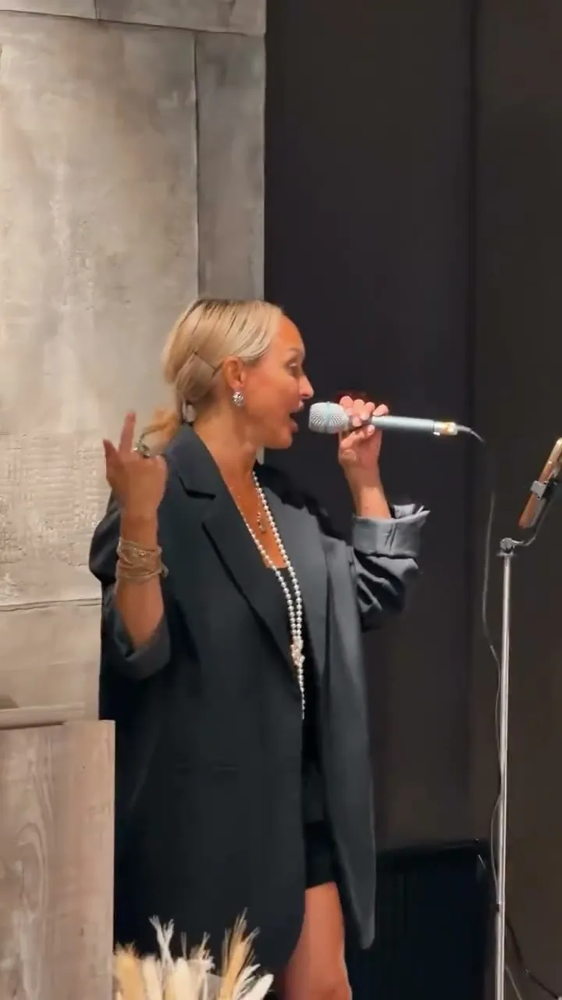
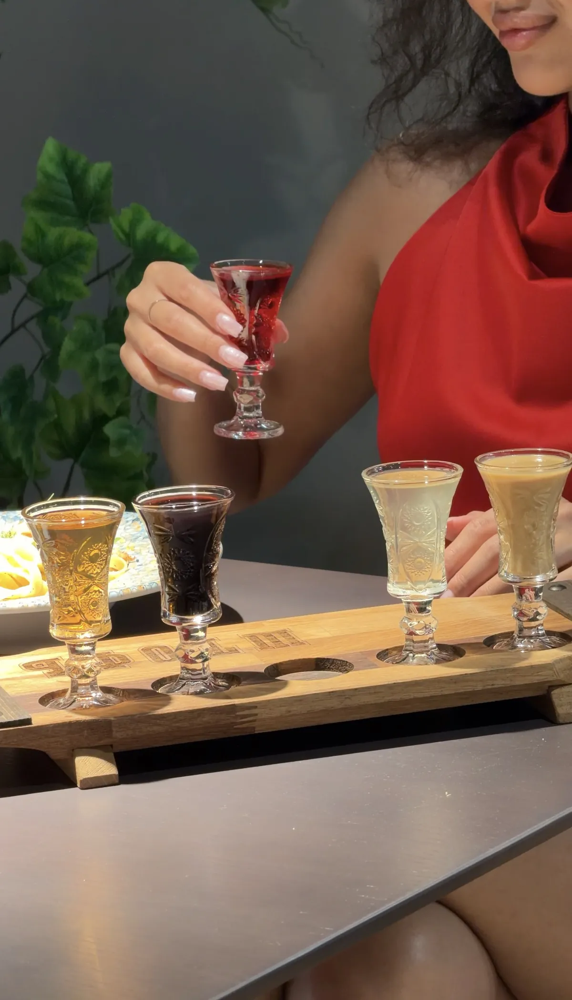
Глава первая
Фирменные настойки
традиционного производства · выдержка 30–90 дней
Чарка
В бутылке
Любую настойку из карты можно купить в фирменной бутылке навынос — с собой или в подарок.
Дегустационные сеты
Сигнатурная подача
Каждая порция и каждый сет подаются с закуской.
Карта настоек
Больше 60 вкусов — осталось найти свой
Таёжные и уральские
Ягодные
Аптечные и корневые
Фруктовые
Хлебные и ореховые
Пряные и травяные
Цитрусовые
Острые и закусочные
Медовые и десертные
Курсивом рядом с настойкой указаны аллергены: мёд · орехи · молоко · глютен. У нас всегда есть авторская настойка от нашего настоятеля — её ещё нет в карте, но вы можете попросить её у официанта.
Глава вторая
Что такое штофъ
и почему мы так называемся
До революции штофом называли и меру крепких напитков — десятую часть ведра, и саму гранёную бутыль тёмного стекла, в которой водку и настойки подавали в трактирах. За штофом собирались, спорили, мирились и пели — он был мерой беседы, а не опьянения.
Мы наполняем эту меру заново: настаиваем сами — на ягодах, травах и кореньях, выдерживаем 30–90 дней, ни грамма ароматизаторов. Мы не продаём настойки — мы создаём повод встретиться.
Как рождается настойка
- 01Сырьёягоды, травы и коренья — уральские и таёжные
- 02Настаивание30–90 дней в тёмном стекле, столько, сколько требует рецепт
- 03Настоятельпробует каждую партию и решает, когда она готова
- 04Чарка25 или 40 мл, сетом на 3–8 рюмок — или настойки навынос, в штофе
Мы в историческом центре — «Мытный двор» на 8 Марта, в десяти минутах пешком от «Гринвича»: там, где двести лет назад собирали пошлину с купцов, теперь наливают по-честному. История Мытного двора →
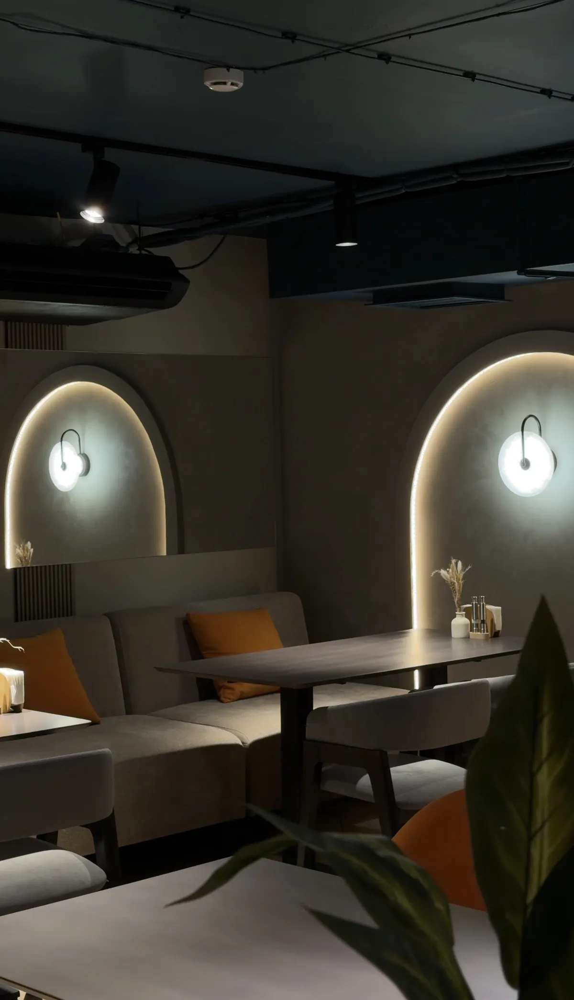
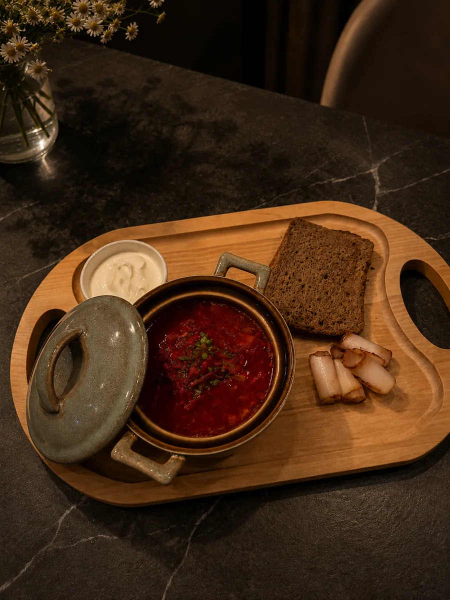
Глава третья
Кухня
к настойкам · мангал и гриль · паста и пицца
От ухи с водкой и фирменных пельменей до тальяты и пиццы — готовим сами и подаём по-честному. Ниже вся карта по разделам: выбирайте вкладку — или откройте полное меню одной страницей.
С чего начать
- Фирменные пельмени ШтофЪ350
- Уха с водкой450
- Сало по-домашнему690
- Тальята с телятиной1 400
- Фетучини с лососем850
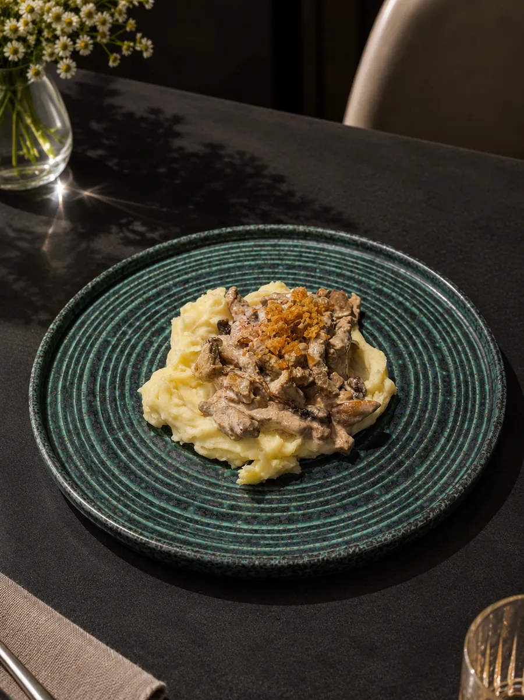
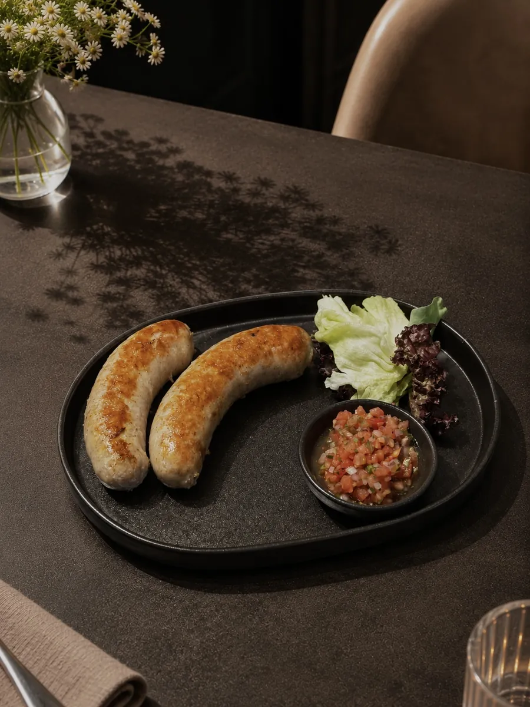
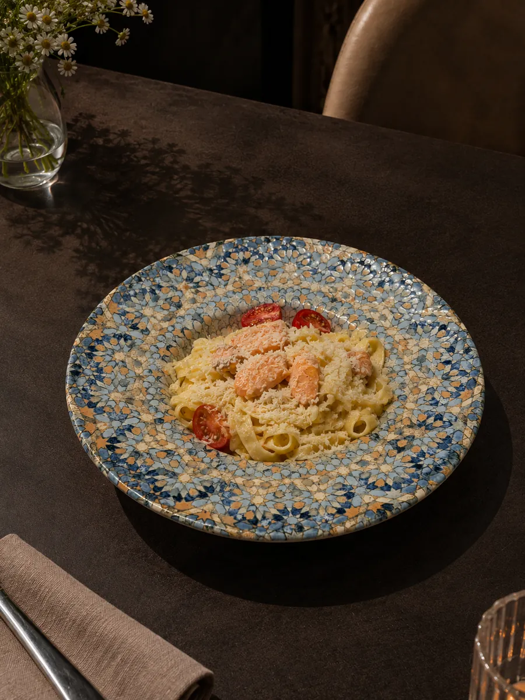
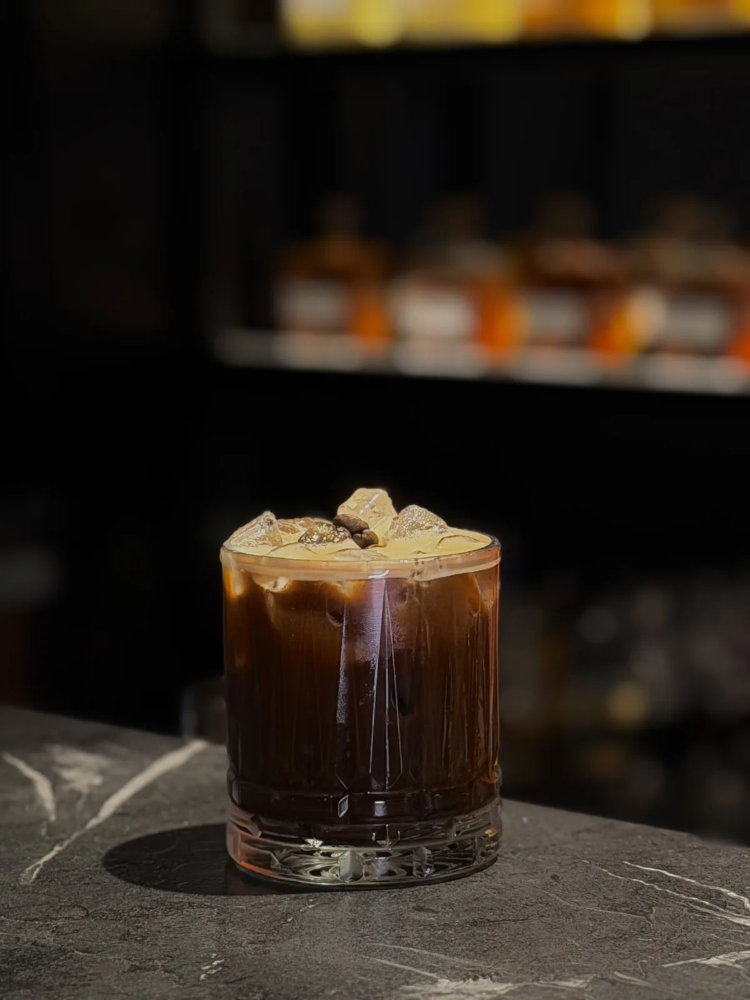
Глава четвёртая
Барная карта
пиво · коктейли · крепкое · вино · чай и кофе
Пять кранов, коктейли на уральских ягодах, полугары, вино по бокалам и чайная карта — бар собран так, чтобы к настойкам всегда было что добавить.
С чего начать
- Уральский Лес · коктейль580
- Полугар Водка · 50 мл550
- Жигулёвское · 0,3 / 0,5190 / 280
- Саперави Каффа · бокал380
- Душа Тайги · чайник590
крепкий алкоголь — порция 50 мл
вино — бокал 125 мл / бутылка 0,75 л
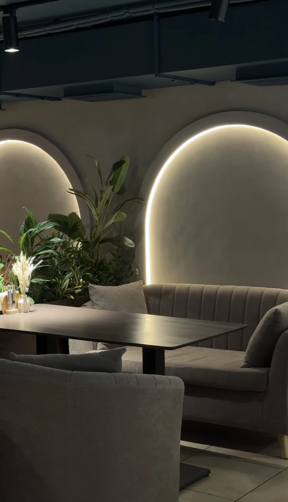
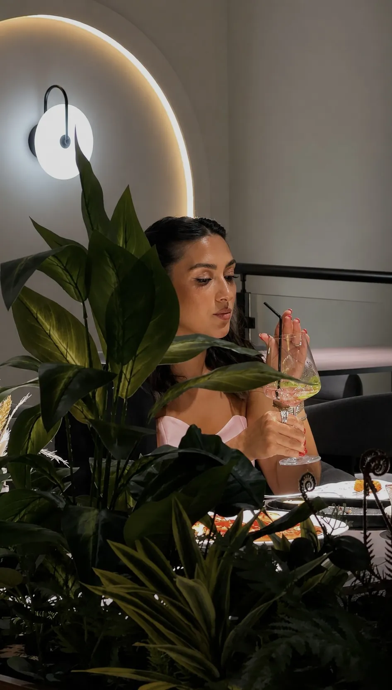
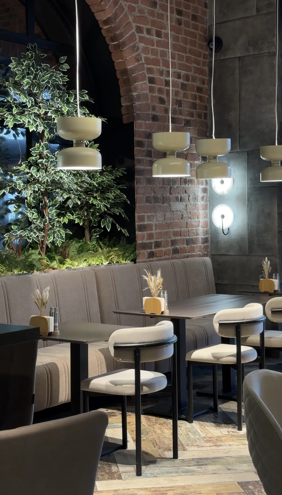
Глава пятая
Заходите в гости
мы уже накрыли стол — центр Екатеринбурга
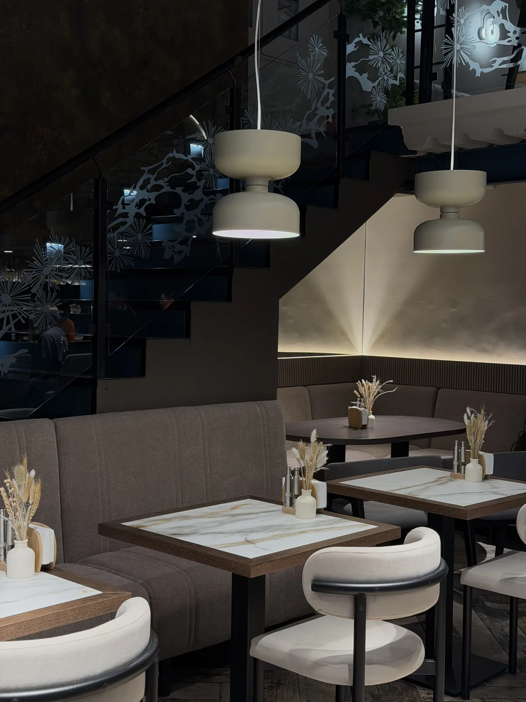
Забронировать